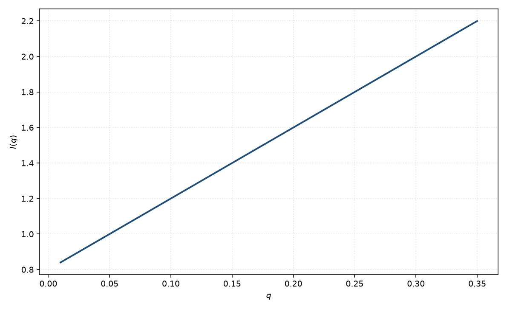

线性
line
适用场景
本页选定线性本底 $I(q)=A+B q$。它不是粒子形状模型，也不给出半径、厚度或分形维数。用途只是：吸收未扣净的残差斜率、弱的多重散射/漏光随 $q$ 的缓变，或在极窄窗口里做经验基线。
文献里也有人写 $A+B q^2$（与某些探测器或密度涨落展开有关）。本手册不采用平方项：页内公式、配图与参数表一律是 $A+Bq$。若数据其实是 Porod 尾、幂律或 Guinier，应改用那些模型，而不是把形状信息塞进 $B$。
把 $B$ 解释成尺寸、把 $A+Bq$ 当成形式因子，都是误用。
物理图像
$A$ 是与 $q$ 无关的本底（溶剂、非相干本底、暗电流）。$B q$ 是人为加上的线性项，没有唯一的微观推导；它只在强度随 $q$ 近似直线时成立。
对形状的取向平均、磁性形式因子、多分散 $P(q)$ 都不属于本页。若核与磁通道本底不同，应分别给 $A$，不要共用一个 $B$ 去“解释”磁 $R_g$。
示意图

核心公式
出发点
本式是经验基线 $I=A+Bq$，不是粒子形式因子。各向同性相干散射 $I(q)$ 是 $q$ 的偶函数，物理上的小 $q$ Taylor 只能是 $A+C q^2+\cdots$（Guinier），不能出现线性项。因此 $Bq$ 没有唯一微观推导，只用于吸收残差斜率。
推导
把一段很窄、几乎无曲率的窗口里的 $I(q)$ 写成一阶多项式：$I(q)\approx I(q_*)+I'(q_*)(q-q_*)$，再重定义为 $A+Bq$。这不是从 $\int\Delta\rho\,\mathrm{e}^{i\mathbf{q}\cdot\mathbf{r}}$ 来的。偶函数条件 $I(q)=I(-q)$ 要求 $I'(0)=0$，故把 $B$ 解释成 $R_g$ 或 Porod 斜率都与对称性矛盾。
文献中的 $A+B q^2$ 才对应密度涨落或探测器的偶次展开；本手册不采用平方项，页内一律
$$I(q)=A+B q.$$低 $q$ 与渐近
低 $q$ 与高 $q$ 都是同一条直线，没有特征长度、没有 $q^{-4}$。出现曲率就应停用。拟合形状模型时，$A+Bq$ 只可作为附加本底，并优先尝试 $B=0$。
参数表
| 参数 | 符号 | 含义 | 单位 | 典型范围 |
|---|---|---|---|---|
| 常数项 | $A$ | 与 $q$ 无关的本底 | 与强度单位一致 | 溶剂与仪器相关 |
| 斜率 | $B$ | 线性项系数 | 强度单位 / 波矢单位 | 可正可负；无形状含义 |
拟合注意
取向、多分散、磁性形式因子：本页都不描述。若这些效应表现为缓变残差，先回到真正的 $P(q)$ 或 $S(q)$，而不是加大 $|B|$。
可辨识性：$A$、$B$ 与任何缓变幂律在短窗口内无法分辨。拟合形状模型时，$A+Bq$ 只应作为附加本底，并且优先尝试把 $B$ 固定为 $0$。出现明显曲率就应停用本页。
相近模型
- Guinier — 低 $q$ 曲率来自 $R_g$，不是线性斜率。
- Porod — 高 $q$ 应是 $q^{-4}$ 界面尾，不是 $A+Bq$。
- 幂律 — 需要指数 $m$ 时用幂律，而不是线性项。
参考文献
- Guinier, A.; Fournet, G. Small-Angle Scattering of X-rays. Wiley: New York, 1955.